Como ler e escrever arquivos XML com a API XStream
Antes de iniciar, sugiro que acesse o tutorial de primeiros passos.
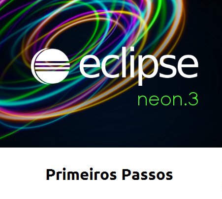Supondo que já realizou os primeiros passos e está com o Eclipse aberto, crie um novo projeto Maven.
Na área de "Project Explorer": Clique com o botão direito do mouse e selecione New > Other
Digite "maven" na área de pesquisa da nova janela, selecione "Maven Project" e clique em "Next >"
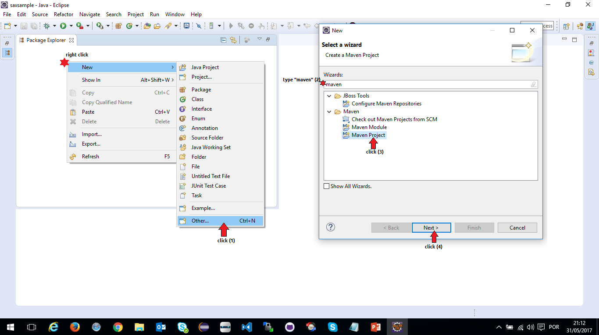Marque a opção "Create a simple project" para criar um projeto do zero e, em seguida, clique em "Next >"
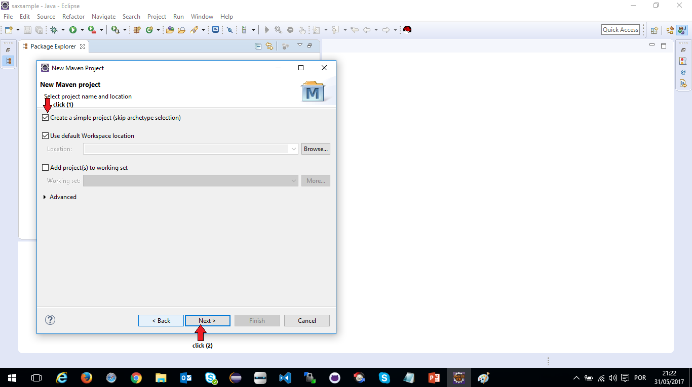Preencha os campos conforme a imagem abaixo e clique em "Finish"
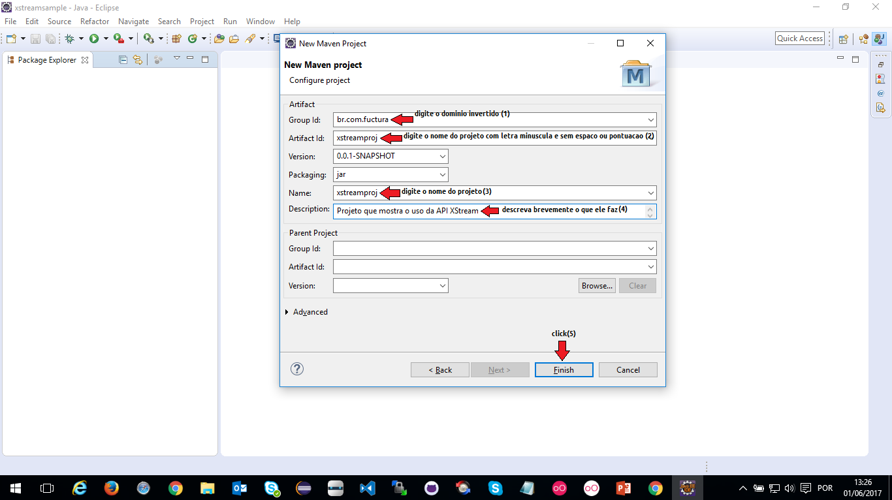Aguarde o Maven criar o projeto...
Abra o arquivo "pom.xml", selecione a aba "Dependecies" e clique em "Add" para adicionar a dependencia para usar XStream conforme a imagem abaixo e, em seguida, clique em "Ok"
Lembre-se de apertar "ctrl+S" para salvar o arquivo pom
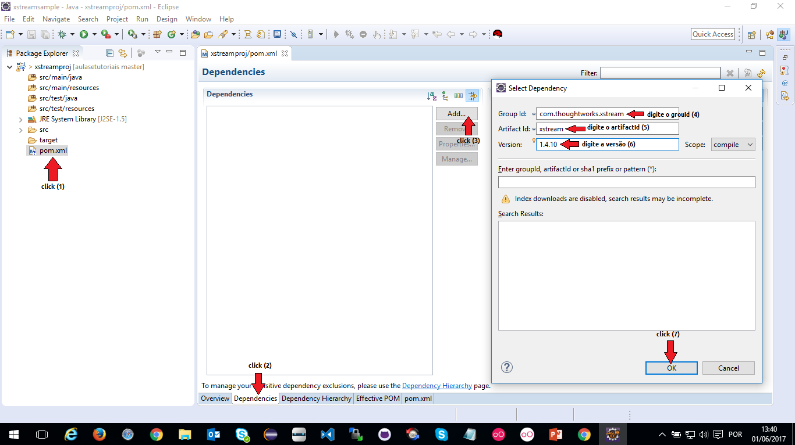Crie o arquivo XML que será lido
Clique com o botão direito do mouse sobre o projeto, siga o fluxo "New > Other", digite "xml file" na caixa de pesquisa e selecione a opção "XML File" que aparece conforme a imagem abaixo.
Clique em "Next >"
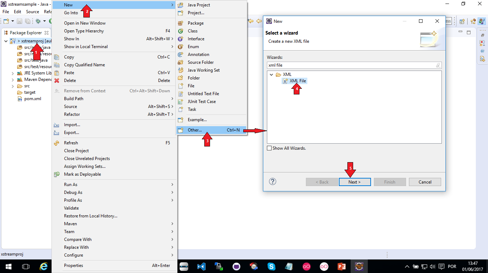Digite o nome do arquivo conforme mostrado abaixo e clique em "Next >"
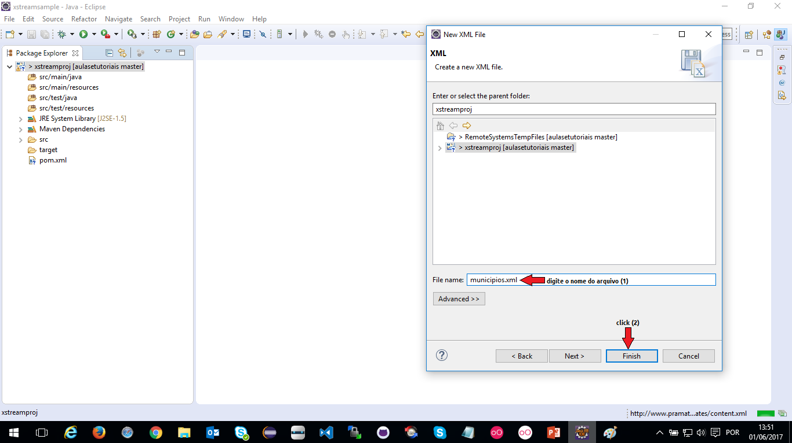Preencha o arquivo com as informações dentro de suas tags conforme a imagem abaixo.
Salve o arquivo apertando "ctrl+S"
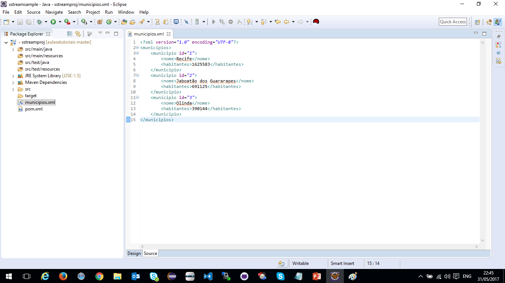Crie os pacotes que serão usados para separarmos as classes da aplicação dentro da pasta main (src/main/java) conforme a imagem abaixo.
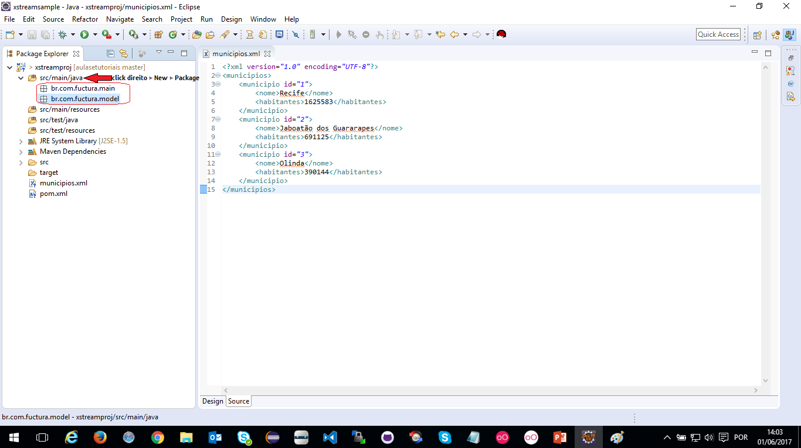Crie a classe "Municipio" dentro do pacote "model" conforme a imagem abaixo.

Crie a classe "Municipios" dentro do pacote "model" conforme a imagem abaixo.
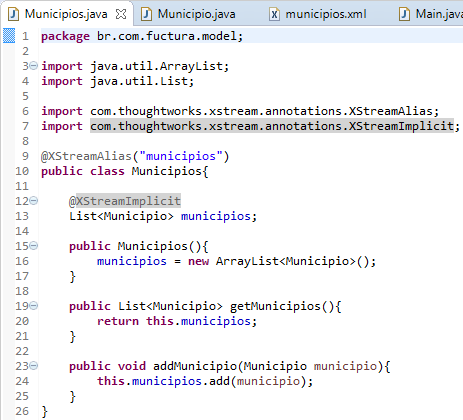Crie a classe Main dentro do pacote "main" conforme a imagem abaixo
Execute a aplicação como Java (Run As > Java Application) e veja o resultado. 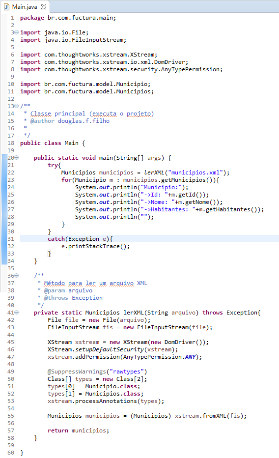
Para escrever o arquivo XML com base nas classes usadas, basta criar o metodo escreverXML(), como mostra a imagem abaixo, e executar dentro do método estático "main"
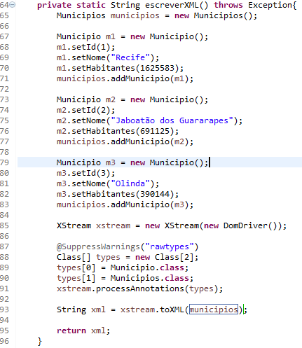Acesse o código desta aplicação neste link.
Continue nos acompanhando, acesse nossa home e veja o quanto pode aprender com Java.
Até mais!